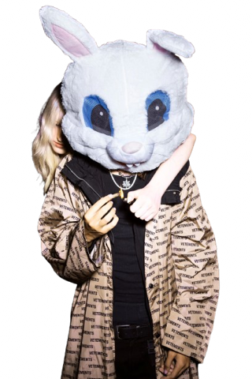
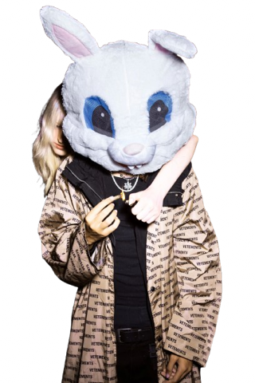
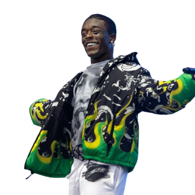
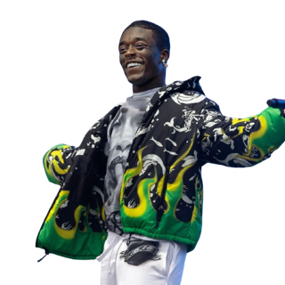
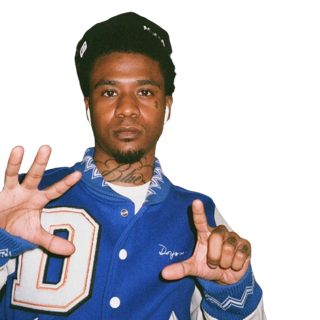
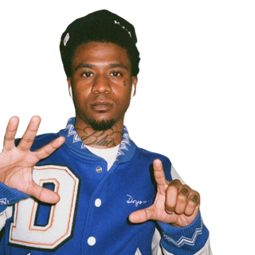
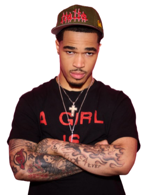
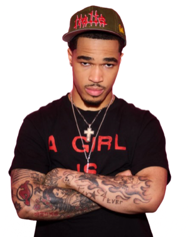
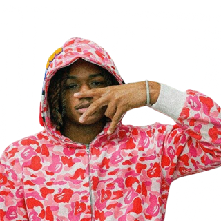
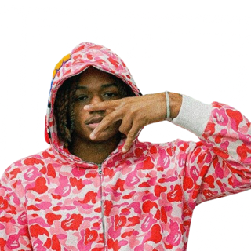

 



 



 



 



The SoundCloud Era (2015-2019)
The SoundCloud era (2015-2019) laid the groundwork for what underground rap is today. It’s when XXXTentacion, Lil Uzi Vert, Juice WRLD, and Playboi Carti separated from mainstream distribution and reached listeners entirely over the internet. The music was rugged, personal, and sometimes distorted on purpose. Tracks were shorter, more digestible, and closely related to younger generations, anime, and the internet.
It showed the world that with or without the support of radio, angst, anger, and individuality can be successful. Influences from Chief Keef’s drill and minimalism, Future’s trap melodies, Young Thug’s style of vocal delivery, Kanye West’s trailblazing, and Kid Cudi’s emotional lyrics all paved the way for this underground SoundCloud movement. It was more than just a genre, it was a statement of independence through the power of the internet.
Reconstruction (2020-2023)
Fast forward to 2020-2023, the underground was reconstructed in a more sinister, digital form. Ken Carson, Destroy Lonely, Summrs, Autumn!, and Kankan spearheaded a movement often linked to rage production, hyperactive synths, and aesthetic-based collectives such as Slayworld and Opium.
With Playboi Carti’s Whole Lotta Red having a significant impact on the sound of this generation, high energy instrumentation, distorted bass, and fashion-branded branding were central to the era. The internet was no longer the starting point, but the primary platform. Discord servers, TikTok clips, and online micro-communities had an impact on rising acts. This was the part where emotional SoundCloud rap had evolved into a more turbulent, performance-based, and image-based underground scene.
Hyper-Digital Period (2024-2026)
Now to 2024-2026, the hyper-digital period of the underground begins. The second wave of artists such as Nettspend, Osamason, xaviersobased, Nine Vicious and so on have grown up totally in an age of online presence. The music is faster, more distorted and more unstructured, relying heavily on blown out production, slang and algorithmic success.
Songs are very loud and short, made to grab your attention immediately. The whole era progresses quickly, with trends and styles emerging every few months rather than every few years. The emphasis is less on quality and more on hype and presence. It’s indicative of a new generation who are used to digesting and creating music at an incredible rate.
Timeline And What Comes Next
Each one has picked up where the last one left off. SoundCloud emo-rebellion and DIY self-reliance. 2020-2023 anger and communalism. 2024-2026 digital chaos and internet-centricity. All of them forming a sort of timeline of underground rap’s transition from blown-out-bedroom recordings to a fully-flowing internet hydra.
And that’s just the start. Beyond those three waves, there are micro-genres and sub-movements to delve into, ranging from pluggnb and sigilkore to underground drill, experimental trap, and regional internet scenes. The underground never stands still. This is a website to document, analyze, and delve into every stratum of it.